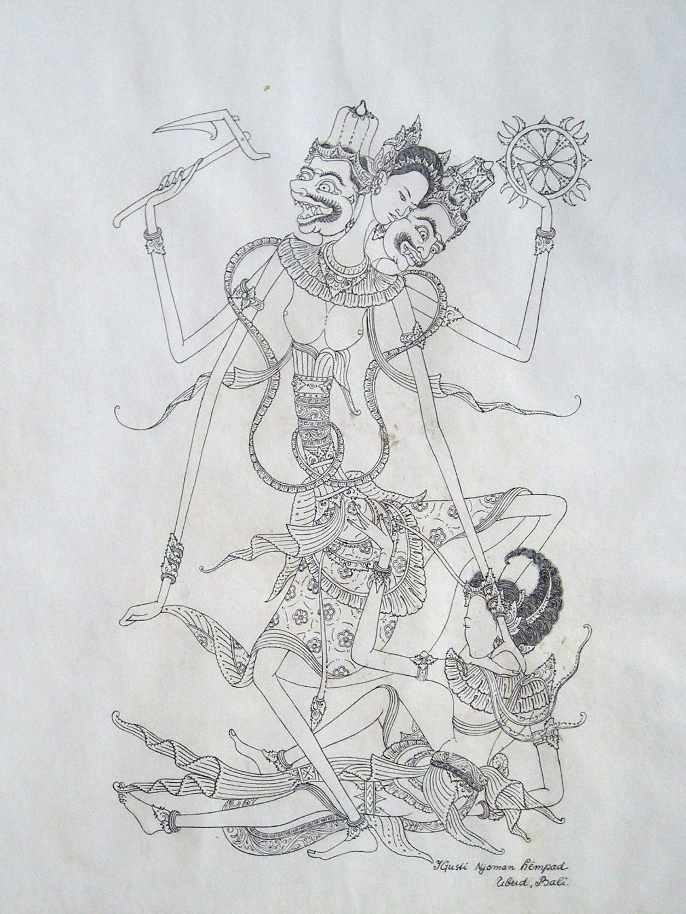

I Gusti Nyoman Lempad
1862 – 1978
Artist Biography
Lempad, one of Bali’s foremost artists, is thought to have lived an astonishing 116 years. He spent the majority of those as an architect, responsible for some of the best royal palaces around Ubud. When persuaded to turn his hand to drawing by Walter Spies and other Bali-based Western artists, Lempad proved to have a unique eye. Over subsequent years he produced a stream of superb illustrations of Hindu mythology and other traditional Balinese scenes, mainly using ink on paper and working on a relatively small scale. Of all the early Balinese artists, Lempad, though appreciative of Western methods, perhaps retained the strongest indigenous artistic style.

Untitled